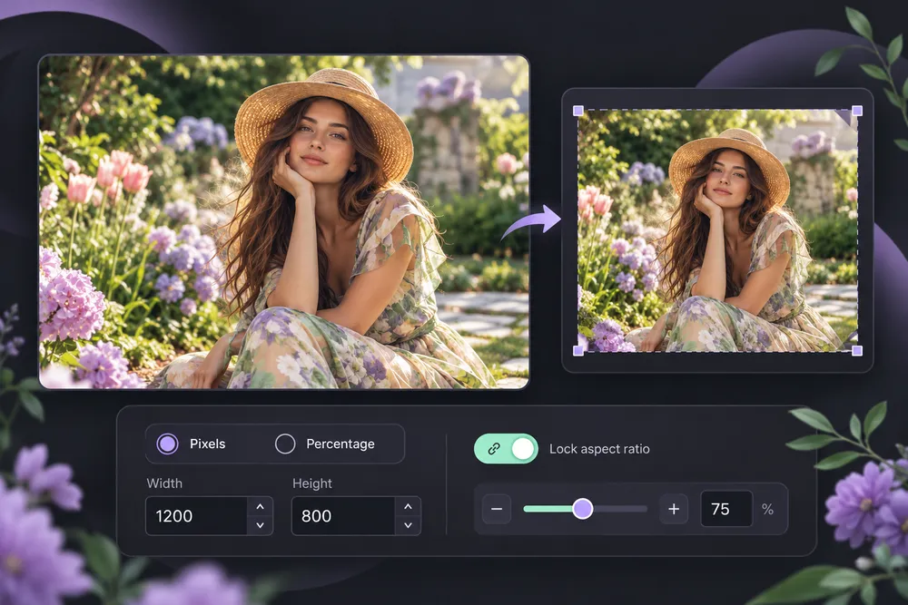
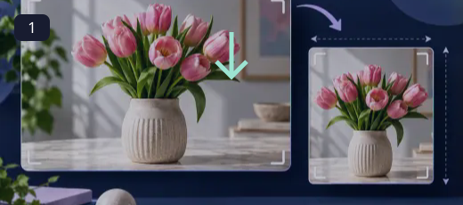
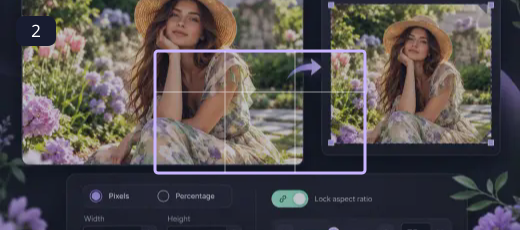
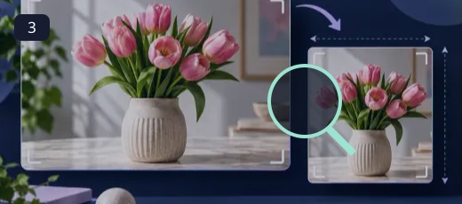
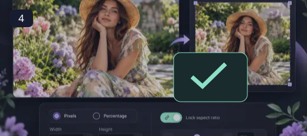

Image Resizer
Resize in pixels or by percentage, with an optional aspect lock.
A photograph can work beautifully in one layout and feel cramped in another. Begin with the destination: a wide thumbnail, a square avatar or a tall story. Fit keeps the whole photograph visible and may add margins; fill uses every part of the canvas and crops the edges; stretch changes proportions. Keep faces and important lettering away from the edge, then compare the exported image with the source.
How to use Image Resizer ↓How to use Image Resizer

Choose your source file
Open a supported file from your device. The original is kept separate from the exported result.

Adjust the tool settings
Resize in pixels or by percentage, with an optional aspect lock. Choose dimensions or a preset, then decide how the image should fit. Enlarging an image increases its pixel count but cannot recover detail that was never captured. Social platforms can change their upload requirements, so the editable dimensions remain available even when a preset is selected.

Review the preview or selected region
Use the preview to check composition, readability and the selected dimensions. Brush and crop controls accept touch as well as mouse input.

Export a separate result
Use Export or the individual download links. Compare the saved file with the source and keep the original for future edits.
A canvas that fits the destination
Choose dimensions or a preset, then decide how the image should fit. Enlarging an image increases its pixel count but cannot recover detail that was never captured. Social platforms can change their upload requirements, so the editable dimensions remain available even when a preset is selected.
- Resize in pixels or by percentage, with an optional aspect lock.
- Use a dedicated URL and controls tailored to this operation.
- Keep the source separate from the downloaded result.
- Read visible output dimensions, format and processing status.
Choose dimensions or a preset, then decide how the image should fit. Enlarging an image increases its pixel count but cannot recover detail that was never captured. Social platforms can change their upload requirements, so the editable dimensions remain available even when a preset is selected.
Questions, answered
What does Image Resizer do?
Resize in pixels or by percentage, with an optional aspect lock.
Does it change my original file?
No. The workspace exports a separate result. Keep the source if you may want another version.
What should I check before using the result?
Choose dimensions or a preset, then decide how the image should fit. Enlarging an image increases its pixel count but cannot recover detail that was never captured. Social platforms can change their upload requirements, so the editable dimensions remain available even when a preset is selected.
Are there any practical limits?
Very large files can exceed browser memory. Specialized source formats need a supported decoder, and the saved image may not retain source metadata.
Will this replace my original file?
The tools create a separate output. Keep the original until you have checked the exported file; the site does not provide cloud project backups.
Can I publish the result?
Use source media you own or have permission to edit. Check the destination’s requirements and the rights of anyone shown before publishing.